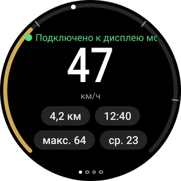
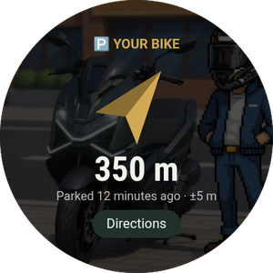
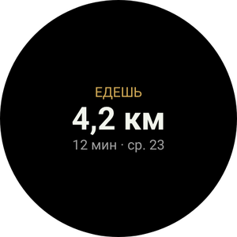
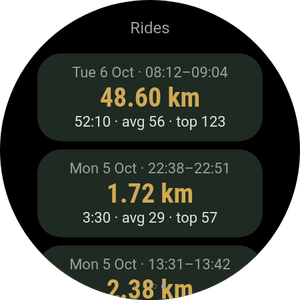
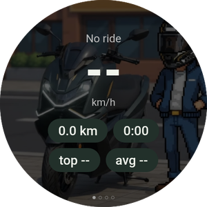

Твой мотоцикл на запястье
Приложение Wear OS необязательно и работает вместе с приложением на телефоне. Оно показывает скорость и следующий манёвр, вибрирует перед поворотами, помогает найти припаркованный мотоцикл и позволяет управлять Android Auto на дисплее, не касаясь телефона.
Ещё не установил приложение на телефон? Начни с руководства для телефона.

Что появится на часах






- Часы с Wear OS 3 или новее: Galaxy Watch 4 и новее, Pixel Watch и другие. Часы Huawei, Amazfit и Garmin работают не на Wear OS и не поддерживаются.
- Часы уже сопряжены с телефоном, на котором установлен RideScreen AA 2.2 или новее установлен на телефоне.
- Телефон и часы подключены к одной сети Wi-Fi (например, домашней). Это нужно только для установки.
- Около 10–15 минут. Установка выполняется только один раз: последующие версии можно устанавливать с телефона.
Установка приложения на часы
Часы не открывают APK-файлы как телефон, поэтому при первой установке понадобится приложение на телефоне, которое подключается к часам по Wi-Fi через беспроводную отладку. Звучит сложно, но достаточно нескольких нажатий.
-
Скачай APK для часов на телефон
Нажми кнопку, чтобы скачать APK для часов напрямую (имя файла заканчивается на WearOS-reloj.apk). Оставь файл в папке «Загрузки».
Также установи на телефон одно из этих приложений из Play Store: Wear Installer 2 или Bugjaeger.
Скачать APK для часов -
Включи параметры разработчика на часах
Galaxy Watch: Настройки → Сведения о часах → Сведения о ПО → нажми Версия ПО пять раз.
Pixel Watch и другие: Настройки → Система → О телефоне/устройстве → нажми Номер сборки семь раз.
Появится сообщение об активации параметров разработчика.
-
Подключи часы к Wi-Fi
Настройки → Подключения → Wi-Fi: установи значение Включено (не «Автоматически») и подключи часы к той же сети, что и телефон.
Если позже часы не покажут IP-адрес, на время выключи Bluetooth телефона: часы используют Wi-Fi, только когда не могут связаться с телефоном по Bluetooth. -
Включи беспроводную отладку
Настройки → Параметры разработчика → включи Отладку ADB и Беспроводную отладку. Открой «Беспроводная отладка» → Сопряжение нового устройства.
На часах появится шестизначный код и адрес с портом, например 192.168.1.40:37115.
Сначала увеличь время до выключения экрана. Если экран погаснет во время сопряжения, код истечёт. -
Сопряжение и установка с телефона
Открой Wear Installer 2 (или Bugjaeger), введи адрес и код сопряжения, затем подключись по адресу на главном экране беспроводной отладки.
Выбери файл …-WearOS-reloj.apk из папки «Загрузки» и установи его. Примерно через минуту RideScreen AA появится на часах.
Порт для сопряжения и порт для подключения различаются. Это самая частая ошибка. -
Открой приложение и отключи отладку
Открой RideScreen AA на часах и разреши доступ к местоположению (для компаса к мотоциклу) и уведомлениям.
Теперь можно отключить беспроводную отладку и отладку ADB: для работы и обновления приложения они не нужны.

Управление Android Auto с часов
Дисплей Zontes не сенсорный. С часами можно управлять Android Auto как автомобильным контроллером: колесо перемещает выбор по экрану, а кнопки выбирают элементы, возвращают назад или вызывают Ассистента.
Крестовина (перейди на вторую страницу свайпом)
- ▲ ▼Короткое нажатие: прокручивает колесо Android Auto, перемещая выделение от одного пункта к другому. Удерживание: стрелка вверх или вниз.
- ◀ ▶Стрелки влево и вправо переключают столбцы или вкладки.
- ОКВыбрать выделенный пункт.
- ↩Назад.
- ⌂Главный экран Android Auto.
- 🎤Google Ассистент («построй маршрут до…», «включи музыку»).
- 📊Вернуться к данным поездки.
С вращающимся безелем или заводной головкой
Для Galaxy Watch Classic, Pixel Watch и часов с вращающейся заводной головкой.
- Поворачивай безель или головку чтобы перемещаться по Android Auto, как с помощью колеса автомобильного контроллера. Работает на любой странице часов.
- Нажми ОК OK на крестовине, чтобы выбрать пункт.
- На странице Поездки безель прокручивает список вместо управления Android Auto.
Без вращающегося безеля
Для обычных Galaxy Watch (4, 5, 6, 7…) и часов с плоским экраном.
- The ▲ ▼ кнопки ▲ ▼ на крестовине работают как колесо: одно нажатие перемещает на один пункт.
- Удерживай их если нужна обычная стрелка, например для прокрутки списка вверх.
- На Galaxy Watch с сенсорным безелем, включи его в настройках часов и проведи пальцем по краю экрана, как по вращающемуся безелю.
Страницы приложения
Листай влево и вправо. Точки внизу показывают текущую страницу.

Вибрация перед поворотом
Во время навигации Android Auto часы вибрируют перед манёврами: 2 коротких импульса для поворота налево, 3 для поворота направо, один длинный и N коротких для N-го съезда с кольца и два длинных для разворота.
Включи в приложении телефона: ⚙️ Настройки → Дополнительные функции поездки → Вибрация часов перед поворотом. Функция экспериментальная.
Плитка и усложнение циферблата
Добавь Поездка плитку (смахни с циферблата и нажми +), чтобы увидеть текущую поездку или место парковки. Усложнение RideScreen · km показывает километры поездки на циферблате.
Обновление часов
-
С телефона, без компьютера
Начиная с версии 2.2, когда выходит новая версия, на телефоне открой ❓ Помощь → ⌚ Обновить приложение на часах → Последняя версия.
Телефон скачает приложение для часов и передаст его по Bluetooth. Это займёт пару минут: прогресс будет виден на телефоне и часах. После завершения нажми Install на часах.
При первом обновлении часы попросят разрешить RideScreen AA устанавливать приложения. Включи разрешение и вернись назад.
Частые проблемы
Часы не показывают IP-адресПри включении беспроводной отладки
- Установи Wi-Fi часов в режим Включено, а не «Автоматически», и подключи их к той же сети, что и телефон.
- На время выключи Bluetooth телефона, чтобы часы переключились на Wi-Fi. Когда закончишь, включи его снова.
Wear Installer не подключаетсяПри сопряжении
- Для сопряжения используй порт из раздела Сопряжение нового устройства «Сопряжение нового устройства», а для подключения используй порт на главном экране беспроводной отладки. Они разные.
- Если код истёк, снова нажми «Сопряжение нового устройства», чтобы получить новый.
«Пакет недействителен»При установке
Вероятно, это APK для телефона. Для часов нужен файл, заканчивающийся на WearOS-reloj.apk.
Часы показывают «Нет данных с телефона»После установки приложения
- Хотя бы один раз открой RideScreen AA на телефоне и проверь, что часы подключены к нему через Galaxy Wearable или приложение Pixel Watch.
- Приложения для телефона и часов должны быть скачаны с одной страницы. Они не работают с версией из Play Store или оригинальным OpenCfMoto.
«⚠️ Запусти сервер AA»На странице поездки
Сервер головного устройства Android Auto выключен на телефоне. В Android Auto: ⋮ → Запустить сервер головного устройства (шаг 6 в руководстве для телефона).
«Часы не позволяют приложениям устанавливать обновления»При обновлении с телефона
Часы не разрешают одному приложению устанавливать другое. Установи новую версию так же, как в первый раз (часть 1).
Ничего из перечисленногоКак получить помощь
На телефоне нажми ❓ Помощь → Поделиться журналами и отправь журналы в группу, указав модели часов и телефона.
RideScreen AA — бесплатное ПО с открытым исходным кодом на основе OpenCfMoto от Alexandru (zanderp). Это не официальное приложение Zontes или Google. Скриншоты приведены для примера; названия настроек могут отличаться в зависимости от модели часов. · Руководство для телефона